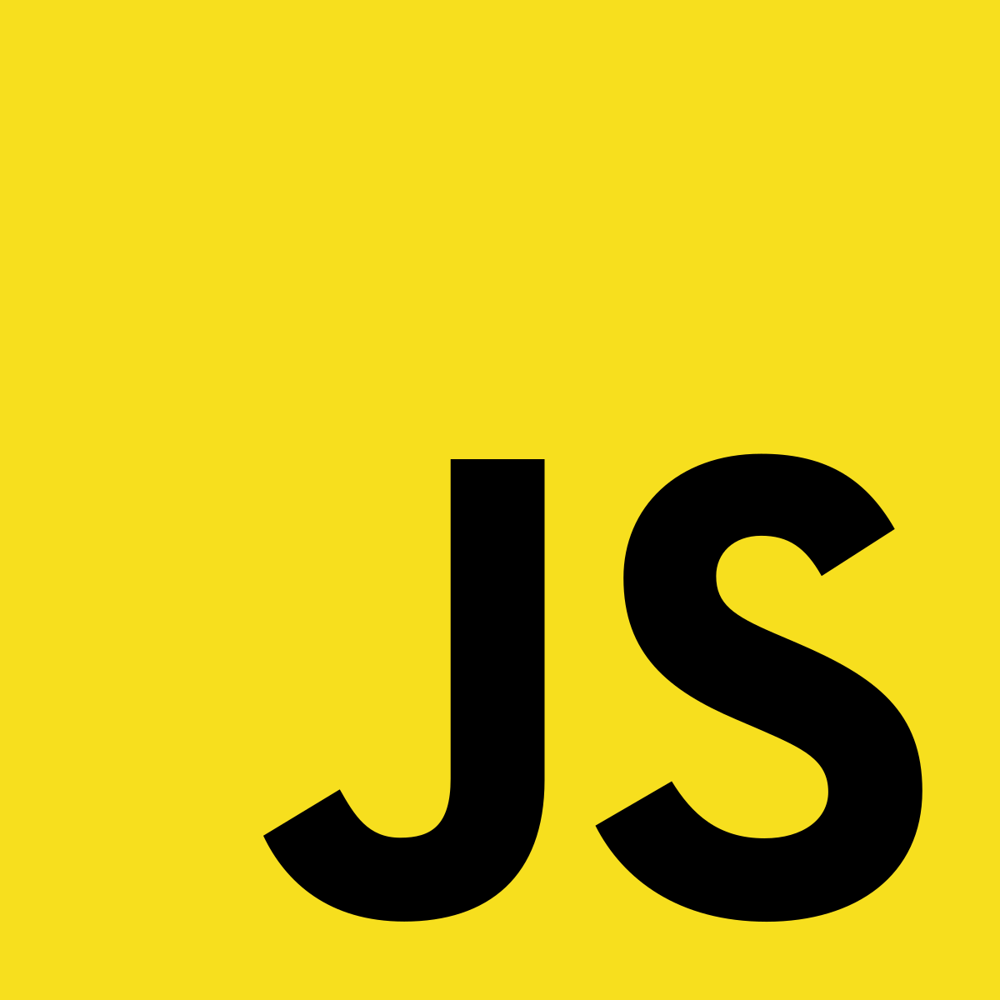

年代別
| 1940年以前 | 正確な時は不明ですが、1940年以前にチャールズ・バベッジが機械式コンピュータを開発した事が始まりです。 1940年頃には機械言語でコンピュータを動かすことが出来るようになり、この機械言語が初のプログラミング言語と呼ばれています。 その言語の開発者はチャールズ・バベッジという方です。 |
|---|
| 1940年から1960年まで | 1940年代は機械語からアセンブリ言語でプログラムを実行することが出来る様になっており、 機械語だけでなくアセンブリ言語により単純な処理をコンピュータで実行する事が出来る様になっています。 |
|---|
| 1960年代 | 1960年代前には手続き型言語の開発が始まり、IBMの数学者ジョン・バッカスを始めとするエンジニアがORTRANを開発します。 FORTRANは世界初となる手続き型言語のプログラミング言語として現在でもごく一部ですが使用されています。 その後、FORTRANにヨーロッパの研究者を中心に構造化プログラミングの最初となるALGOL58が発表されます。 その当時はそれ程大きな流行を見せまでんでしたが、 C言語を中心とする多くのプログラミング言語はALGOL58の影響を受けています。 1960年には現代の日本でも今でも使用されている事があるCOBOLが開発されます。COBOLは一般企業の職員でも使用できることで事務処理などを中心に幅広く普及します。 |
|---|
| 1970年代 | 1970年前後、プログラミング言語に大きな変化がもたらされます。 1970年前後に計算機械学者ケン・トンプソンを中心にB言語が開発されます。 B言語が登場して2年後の1972年、プログラマーを目指している方なら知っている方も多いC言語が計算機械学者デニス・リッチーを中心に開発されます。 C言語登場と同時期にSmalltalkと呼ばれるオブジェクト指向を取り入れた初のプログラミング言語も開発されます。 また、1970年代後半には現在のシステム開発で必要不可欠なデーターベースを操作する為のSQLも登場してきます。 |
|---|
| 1980年代 | 1980年代にはC言語を中心にプログラミング業界が進みます。 1983年、C言語にオブジェクト指向を組み込んだC++が登場しますが、 現代ほどオブジェクト指向が普及していなかったこともあり、C言語がシステム開発の中心となっています。 またC++と時期を同じくして初のオブジェクト指向を取入れたSmalltalkをベースに開発されたObjective-Cが登場します。 Objective-Cは現在でもiPhoneアプリ開発などに使用されています。 また、1987年にはWeb業界で人気を出したPerlも開発されます。 |
|---|
| 1990年代前半 | 1990年にはプログラマーとして活躍していたグイド・ヴァンロッサムがPythonを開発します。スクリプト言語でオブジェクト指向の言語として開発されたPythonは海外を中心に広く普及されます。 ここ数年ではAI開発やビッグデータ解析の開発でもPythonが中心となっており、まだまだ今後も需要が見込めるプログラミング言語です。 1991年にはMicrosoftがMicrosoftVisualBasicMicrosoftVisualBasicを発表し、当時日本のソフトウェア業界でも広く普及しました。 それと同時に、現在でも使用されるExcelにVBAとして付属されている機能もこの時リリースされる事により、プログラマーでない方もプログラミングに触れる機会が増えます。VBAは現在でも大きく形を変える事がなく、多くの方が初めて触れるプログラミング言語の1つです。 |
|---|
| 1990年代後半 | 1995年に日本初のプログラミング言語となるRubyをまつもとゆきひろ氏が発表します。 Rubyはこれまでに登場したPerl、Smalltalk、Eiffel、Ada、Lispの良いところを取り込んだ言語で、現代でも国内外問わず人気のプログラミング言語です。 Rubyの発表と同じ1995年、サン・マイクロシステムズにより一世を風靡したプログラミング言語であるJavaが発表されます。 これまでC言語を中心としたオブジェクト指向が主流ではなかったプログラミング言語が一転し、オブジェクト指向を使ったJavaが多くの業界で取り入れられることになります。 また、1995年には現在のWeb業界で活躍しているPHPにあたるPHP/FIがプログラマーのラスマス・ラードフにより開発されます。 1997年にはWeb業界で中心となるJavaScriptが登場することで、クライアントサイドの動的な処理が実装されることになります。 |
|---|
| 2000年代 | 2002年にはC++にJavaを取り込んだC#が発表されます。2007年にはご存知ない方も多いですが、 これまでの様々なプログラミング言語の機能を取り込んだD言語が発表されます。 現時点ではD言語の需要はそれ程高くはありませんが、今後は主流言語の1つになる可能性のあるプログラミング言語です。 2009年にはIT業界の大手Googleによってプログラミング言語Go プログラミング言語Goが発表されます。 GoはAI開発などで今後活躍が見込まれているプログラミング言語の1つになります。 |
|---|
| 2010年代 | 2011年にGoogleがクライアントサイド・サーバーサイドの両方で機能するプログラミング言語Dartが発表されます。 今後のJavaScript代替えを目的として発表されており、将来活躍が見込まれるプログラミング言語の1つです。 2014年にはAppleによってiPhoneアプリ開発などで使用するSwiftが発表されます。 また、同年にはSNSで有名なFacebookによって、PHPを基に開発したとされるプログラミング言語であるHackが発表されます。 |
|---|
解説・詳細
- アセンブリ言語
アセンブリ言語とはコンピューターが直接解釈できる機械語に1対1で対応したプログラミング言語のことをいいます。 アセンブリ言語は、一般的に「低級言語」と呼ばれ、 CPUの種類に応じて記述の仕方や文法が異なるため人間には少し扱い難いものですが、一つのCPUに特化した仕様は速度が求められる場面で威力を発揮します。
- FORTRAN
科学技術計算に向いた手続き型プログラミング言語。 コンピュータ用で世界最初の高水準言語であり、その後も改訂されて使用されている。
- ALGOL58
ALGOL 58 は、もともと IAL という名前で、ALGOL コンピューター プログラミング言語ファミリーの 1 つです。
- COBOL
COBOL言語は、銀行のオンラインシステムや行政システムなどの大規模なシステムに使われやすいプログラミング言語です。 60年以上も前から使われている言語で、英語の構文に近いために誰でも学習しやすくて一定のクオリティを再現しやすい特徴を持つプログラミング言語として知られています。
- B言語
B言語は再帰に対応し、非数値型に対応し、特定の機種に依存しない言語であり、OSや他の言語などを開発するための言語として設計された 。 データ型を持たない言語で、ハードのCPUレジスタに対応したワード型1種類に依存し、どのようなビット長のCPUにも対応できた。 文脈によりワードは整数またはアドレスとして扱われた。
- C言語
C言語は、高級言語と低レベル言語の両面をもつ汎用プログラミング言語です。 1972年にAT&Tベル研究所で開発され、UNIXオペレーティングシステムの開発に使われ、広く普及しました。 C言語は、低レベルの機能も使えるため、システムプログラミングや組み込みシステムなどに多く用いられます。
- Smalltalk
Smalltalk は、オブジェクトへのメッセージ送信を率直に記述する表記の特殊性や、制御構造をもたずオブジェクトへのメッセージ送信の形で記述する徹底ぶりとも併せて、 C言語や C++ などの流れを強く受け継ぐ言語、およびその開発手法に慣れた開発者にとって極めてとっつきにくい言語・環境であるといわれている。
- C++
C++（シープラスプラス）は、汎用プログラミング言語のひとつである。 派生元であるC言語の機能や特徴を継承しつつ、表現力と効率性の向上のために、 手続き型プログラミング・データ抽象・オブジェクト指向プログラミング・ジェネリックプログラミングといった複数のプログラミングパラダイムが組み合わされている。
- Objective-C
Objective-Cは、MacやiOSなどのApple製品で広く使われているプログラミング言語です。 C言語とSmalltalkを組み合わせたオブジェクト指向言語であり、Objective-Cを使うことで、 直感的でわかりやすいユーザーインターフェースを実現するアプリケーションを開発することができます。
- MicrosoftVisualBasic
Visual Basic はマイクロソフトが1990年代に開発していたプログラミング言語およびその処理系。通常はVisual Basicまたは略してVBと呼ぶ。単体製品パッケージのほか、 Visual Studioに組み込まれたパッケージもあり、さまざまな種類のアプリケーション開発に用いられていた。

- VBA
VBAは「Visual Basic for Applications」の略で、ExcelやWordなどのMicrosoft Office製品を自動化するためのプログラミング言語です。
- Ruby
日本発祥のプログラミング言語であるRubyは、Web開発、スマホアプリ開発、スクレイピングなど、さまざまな開発に利用されています。
- PHP
PHP はシンプルな CGI バイナリ群で、C 言語で書かれていました。

- PHP/FI
過去のリリースの名前を組み合わせた PHP/FI という名前で公開され、この第二世代の実装で、 PHP は単なるツール群からプログラミング言語へと進化を遂げました。 そして DBM や mSQL そして Postgres95 などのデータベース、 クッキー、ユーザー定義関数などのサポートが組み込まれました。
- JavaScript
Webページに動きを与えたり、仕掛けを与えたりすることができるプログラミング言語です。 JavaScriptはユーザー側のWebブラウザと、Webサイトまたはウェブサービスの相互間のやりとりを、円滑にするために使われています。
 - D言語
D言語は、プログラミング言語のひとつ。C言語をベースとしABI互換を保ちつつも、テンプレートによるジェネリックプログラミングやオブジェクト指向プログラミング、 関数型プログラミングなどをサポートするマルチパラダイムプログラミング言語である。
- プログラミング言語Go
Googleにおいて2009年ロバート・グリースマ、ロブ・パイク、ケン・トンプソンによって設計された。Goは、静的型付け、C言語の伝統に則ったコンパイル言語、 メモリ安全性、ガベージコレクション、構造的型付け、CSPスタイルの並行性などの特徴を持つ。

- Dart
Dartは、ウェブアプリやモバイルアプリのクライアント開発向けに設計されたプログラミング言語である。 Googleによって開発された言語で、サーバーやデスクトップ向けアプリケーションの開発にも使用できる。 Dartはオブジェクト指向、クラスベース、ガベージコレクションを備えた、Cスタイルの構文を持つ言語である。
- Swift
Swiftは、ソースコードが読み書きしやすい現代的なプログラミング言語です。 人が理解しやすいスクリプト言語の要素が含まれており、英文に近い表記で可読性が高いのが特徴です。 主に、Apple製品向けのアプリを開発する言語と位置づけられています。